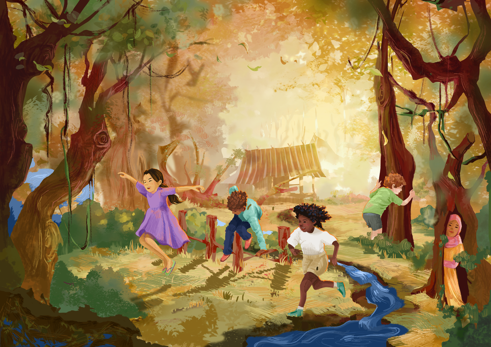
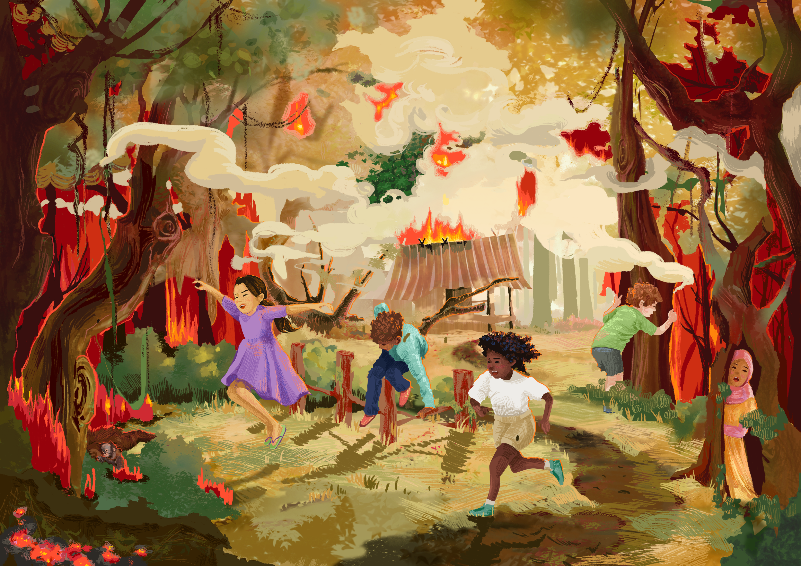

My grandfather says our forest is older than his grandfather’s grandfather. Orangutans swing above us, and hornbills call from the tall trees. The ground is soft and wet, made of plants that fell and slowly turned to peat over thousands of years.
Teacher says Indonesia’s peat holds more than half of all the carbon stored in tropical peatlands on Earth. The trees breathe in what the whole world breathes out, and the forest keeps it locked away. I used to think it would always be here.
Then the rain stopped. By August the river was low and the leaves crackled like paper.
One afternoon I smelled smoke, and by evening the sky past our school was orange. Nobody saw who lit the first flame. The grown-ups argue. Some say farmers burn small patches, like they always have. Others say big companies burn land because it’s the cheapest way to clear it.